NoTube WP7c
Final Review, March 2012
Libby Miller, Vicky Buser, BBC R&D; Dan Brickley, VU
Background: TV, the Web, and Attention
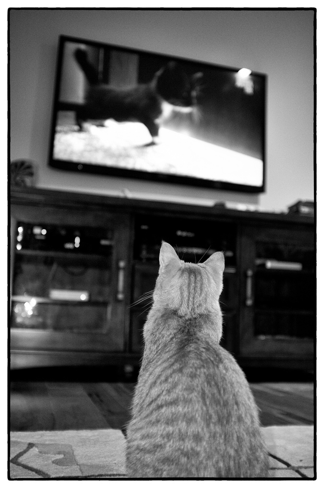
There is increasing competition for attention from the Web, and TV is losing out.
But access to activity data, personal data and social network
data potentially mean the viewers TV does get are more valuable
We took a user perspective on these changes, rather than an industry one.
Driving our work are some observations about behaviour and technology. The Web has
been a looming presence over TV since it began to take up large proportions of
peoples' attention. Competition for attention: for adverts, for types of content, for
free over paid for content, and the sheer volume of content, are all reducing the
amount of attention devoted to traditional TV.
However, by measuring and classifying usage more precisely, the technology could
improve the quality of the attention TV does receive. The increased availability of
activity data, personal data and social network data are all valuable resources of
increasing the monetary value of the attention that is given: fewer eyeballs but more
valuable ones.
Key User Questions
General questions such as: how do people watch TV together, and why? How is this
changing as the devices and availability of programmes change and with the rise of
social networks? What are the technologies that might help them watch together in the
way they want to, in the future?
And Specifically
How people can find something to watch when faced with an overwhelming choice? What
is the role of social recommendations to end users? What are the perceived trade-offs
between personalisation in exchange for loss of privacy? How is it best to interact
with the Web and TV simultaneously?
Specific Applications
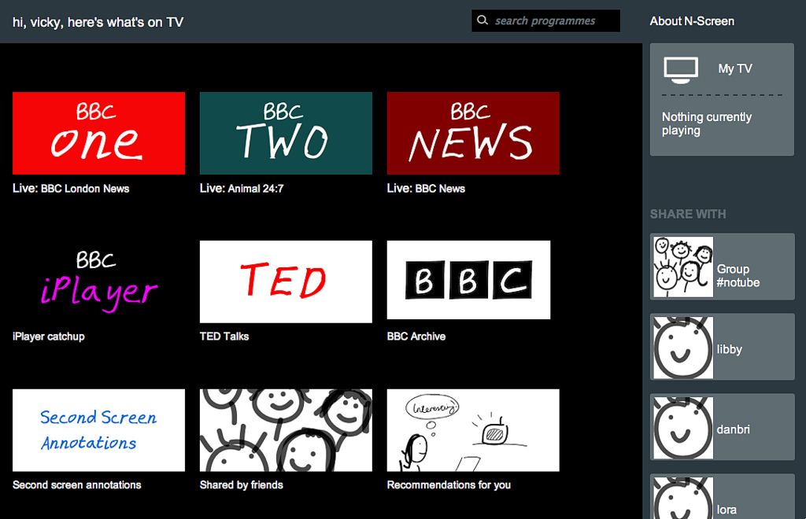
N-Screen: drag and drop sharing and TV control
Specific Applications
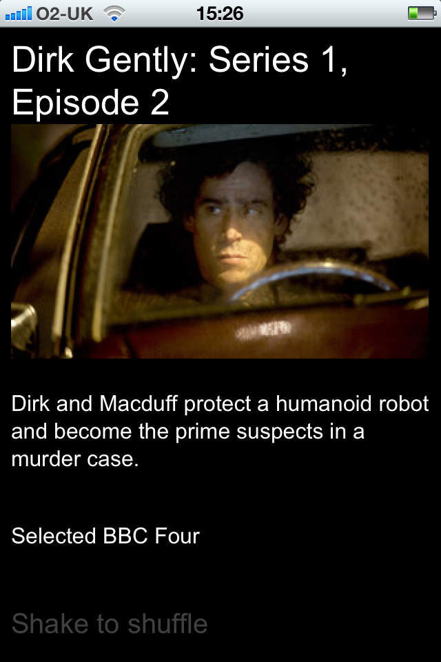
Shaker: Randomising programme chooser.
Specific Applications
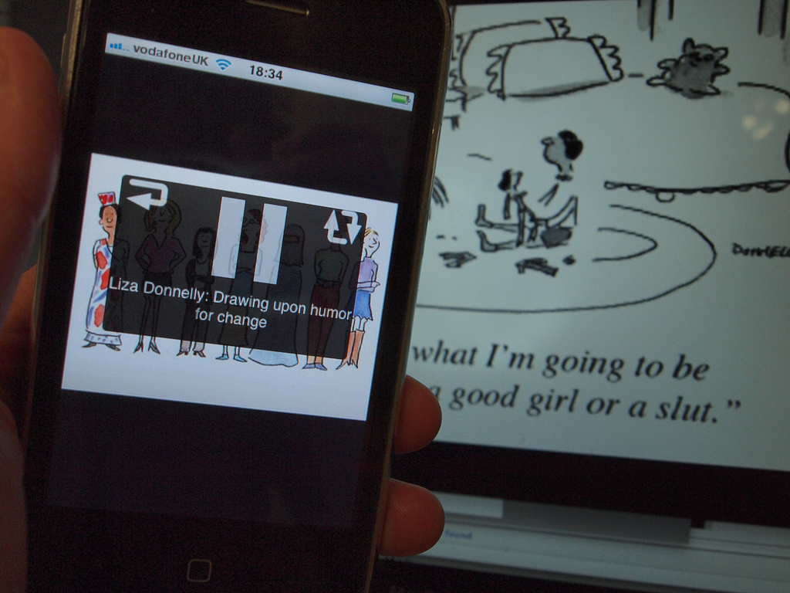
TEA and TEAPlayer: video annotation and second screen annotation playback.
N-Screen functionality and User Testing
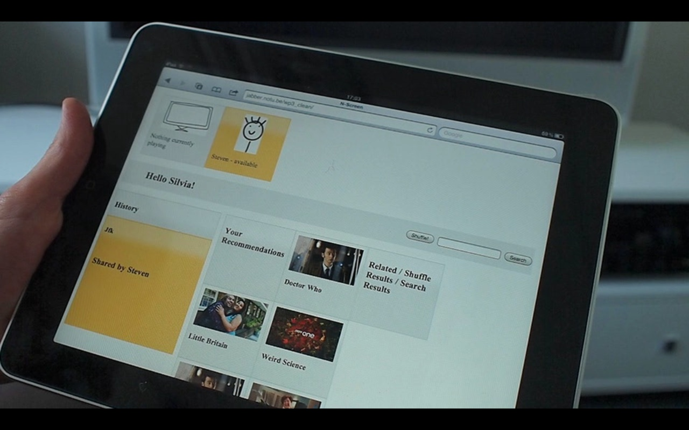
N-Screen started out as a technology demonstrator – so the UI developed organically – started out as a proof of concept.
We created a more polished, professional visual interface in time for IBC.
User Scenario
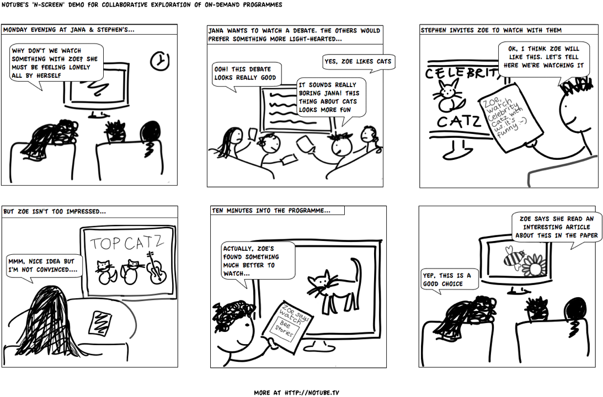
A small group of people together in the same room, each with their own personal
device, deciding what to watch together on one shared TV.
Alternatively the people in the group could be physically remote.
In either case, the specific scenario is about choosing and watching in
real-time with others.
Finding 'Something to watch'
N-Screen supports different recommendation and browsing strategies, including those
based on Beancounter profiles, within one unified end-user interface.
Second screen
N-Screen's 'Connected TV' is a web page capable of playing streaming and on-demand
HTML and flash video. You connect to a specific TV via a pin number. Multiple TVs can
play the same content simultaneously.
Suggestions for you
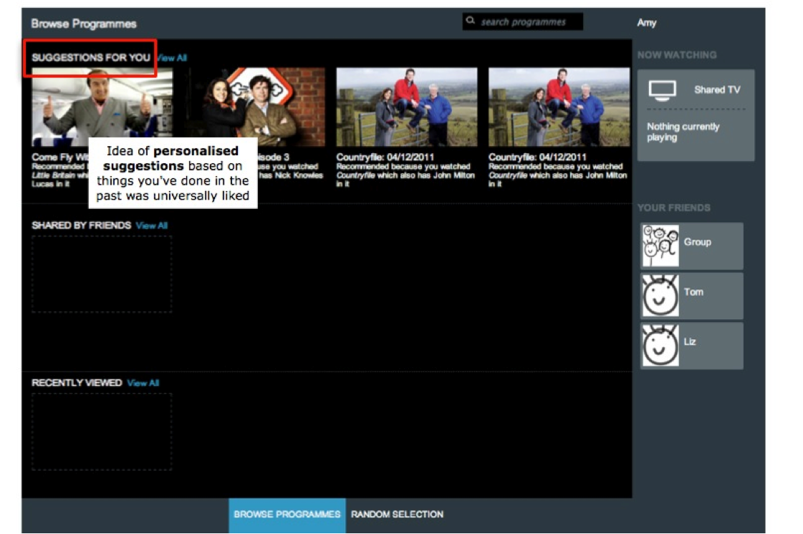
Each participant starts with a different set of personalised recommendations from one
or more video collections (based on Beancounter).
Our user testing participants all liked the concept of seeing programme suggestions
based on things they’d done in the past.
'Random Selection' (Shuffle)
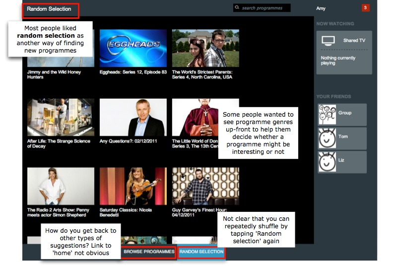
An alternative means of surfacing content buried in the
video collection, or for times when the user might reach a dead-end with the
recommendations approach. It also adds an extra element of serendipity to the
experience. It was liked by testers.
Drag and drop real-time sharing
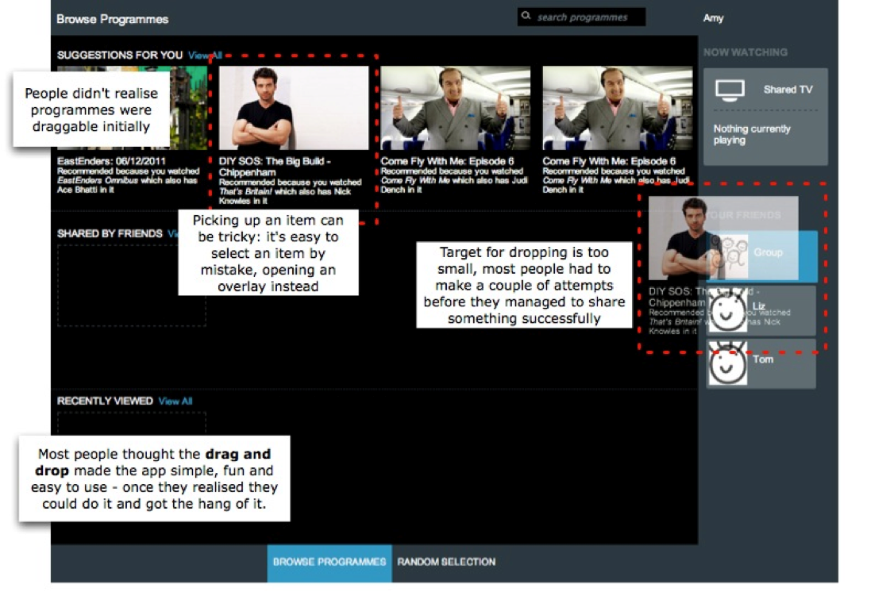
Finding interesting niche video content and sharing these ‘hidden gems’ with friends
are both central components of N-Screen. This aspect of the UX really appealed to people because it’s
simple and fun to use. But they were less convinced about real-time sharing.
Getting recommendations from friends
Receiving suggestions from friends is another way of finding something interesting to watch.
The idea of sharing and receiving suggestions for things to watch with friends in this way was a highlight of the app for many.
More information about a programme
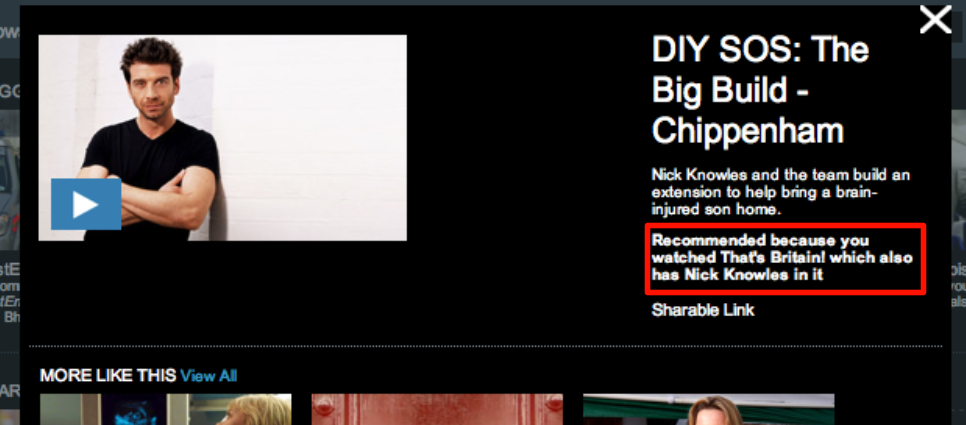
Tapping on a programme suggestion in N-Screen displays an overlay with a brief
programme synopsis, and a 'linked data' explanation as to why it has been recommended.
Contrary to our expectations, people didn't care much about explanations.
Changing the TV using drag and drop
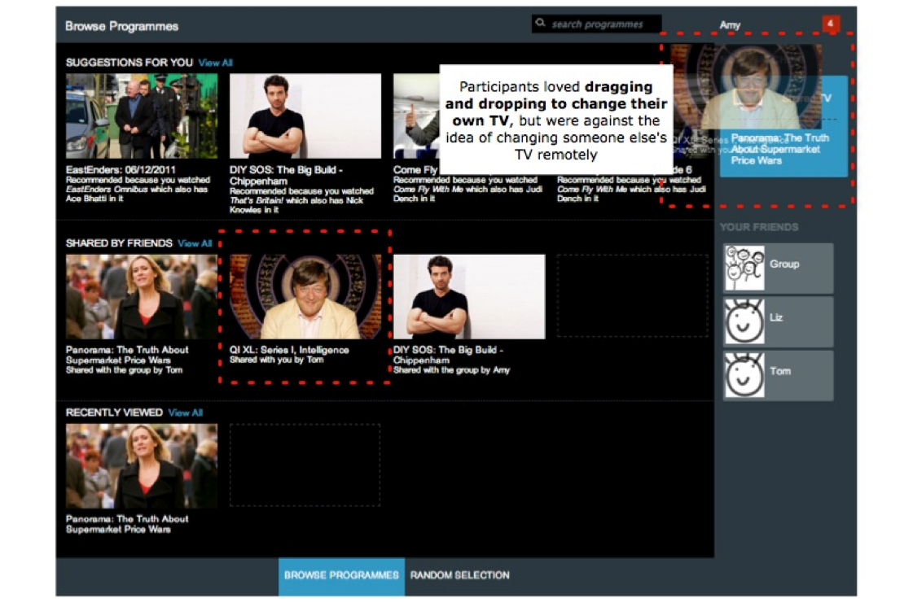
Once the group has decided what to watch, one of the participants drags the programme to the TV icon.
People really liked this feature, but thought being able to change others' TVs remotely was a terrible idea.
Conclusions from User Testing
[detail on who we tested and what we asked]
Social TV
People want to watch TV together. They like talking about TV - they like people
having watched the same thing as them, and older people miss the days when people were
much more likely to have watched something they had. To get the social benefit they don't
have to watch it at the same time as others but sometimes this is fun.
Recommendations
People like recommendations from friends, either personally or via social networks:
social networks here are an extension of face to face interactions; but not all
recommendations from friends are equally good.
Privacy
People will trade-off privacy and personalisation, especially if they see the
benefit. They're getting used to systems that do this, like Amazon.
What to watch
People use various means to find out what to watch, including social networks and
word of mouth, newspapers and listings magazines, and TV adverts and TV show
cross-promotion. They don't spend much time browsing content sites to find programmes
to watch.
TV and Second Screen UX
As TVs become more complex, interacting with them via remotes is becoming much
harder, in particular, UX between applications is inconsistent, text input is
difficult, and reading text is difficult.
There are no conventions yet for tablets as first screen controls, so their behaviour is
not well understood in this context, although in general people enjoy using tablets
and find them intuitive.
Predictions from a User Perspective
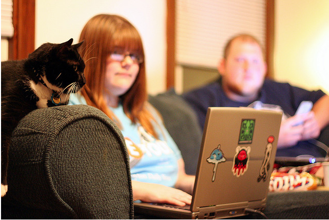
We see second screen devices (tablets and smartphone) continuing to play a major role
in complementing TV.
We think TVs may get dumber rather than smarter.
Interactions will be done on mobile devices/tablets which have better UX.
Key Technical Questions
What's the role of metadata in TV and in applications?
How do devices find out about each other and communicate with each other, and how can we make the process very simple?
What are good technologies for syncing TV and other metadata, and sharing information in real time?
Conclusions: Technical Questions
Pairing
Probably the key issue is pairing of devices. We have tried various techniques: QR
codes, numeric codes, autodiscovery, and numeric 'pin' encapsulating enough
information to connect. Pin seems to be most useful, simple and best understood and least
prone to technical problems.
Synchronisation
Synchronisation...@@
Projects Face Choices
...modest role in something huge - or a huge role in something modest?
NoTube's approach was to use our own modest work to start conversations that allowed
us to help shape some huge changes
Strategy
Be visible, adaptable, demonstratable and open
Techniques
Use standards and open source software; reuse software where possible
Use web technologies for speed of prototyping
Use mainstream commercial platforms for longevity of artifacts and communications
Collaborations
[ adverts, watch n buy, robot]
Conclusions: Our Approach
Conclusions: Continuity and longevity
- Exploitation and dissemination within the BBC
- Demonstrator longevity
- Artifacts longevity (blogposts, flickr, vimeo, github etc)
- Open Source code